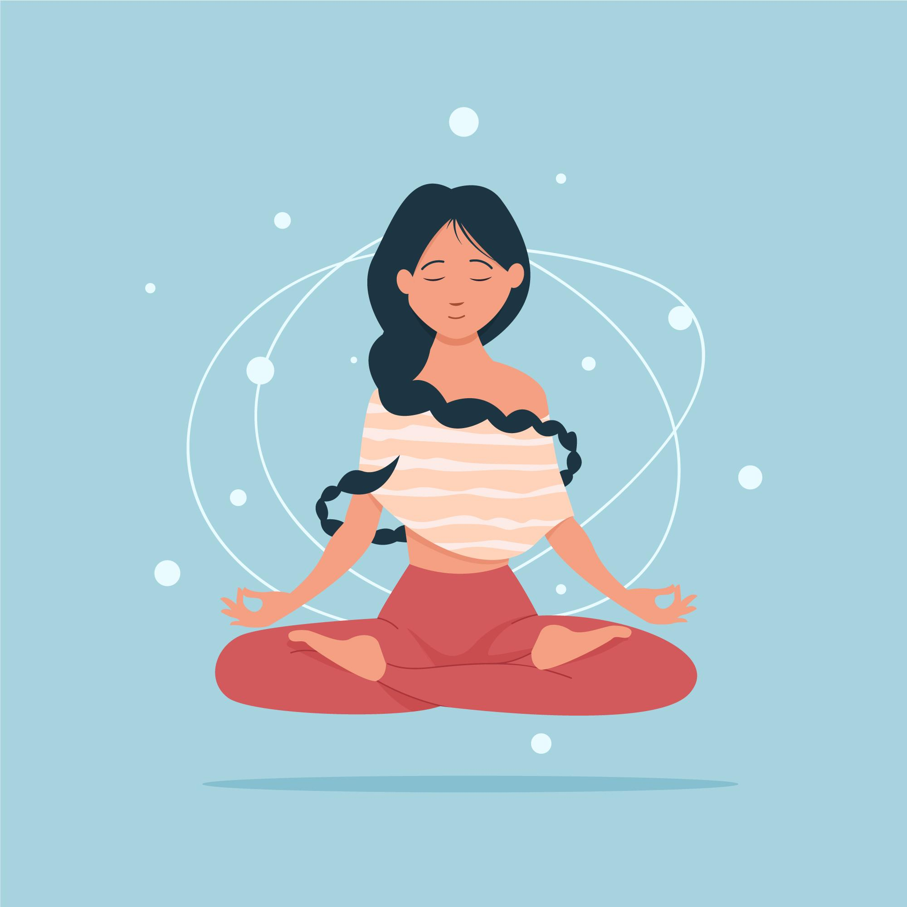

10 Beneficios de meditar
En esta nota te contamos los 10 beneficios de meditar.
El yoga tiene varias escuelas, siendo las fundamentales: el raya yoga, jñana yoga y karma yoga, y las no fundamentales hatha yoga, bhakti, ashtanga vinyasa yoga, kriyā yoga y kundalini yoga.
- Mejora la respiración. Al practicar la Meditación centramos la atención en la respiración, al centrar la atención en ella, la hacemos conscientemente observando su funcionamiento y el de los órganos intervinientes en ella. De esta manera la vamos entrenando y mejorando nuestra capacidad inhalar más volumen de oxigeno y exhalar más cantidad de dióxido de carbono.
- Aumenta la Oxiganación Sanguinea. Al practicar la Meditación centramos la atención en la respiración, al centrar la atención en ella, la hacemos conscientemente observando su funcionamiento y el de los órganos intervinientes en ella. De esta manera la vamos entrenando y mejorando nuestra capacidad inhalar más volumen de oxígeno y exhalar más cantidad de dióxido de carbono.
- Aumenta la Oxigenación Sanguínea. La sangre llega al corazón con una mayor cantidad de oxígeno esto hace que necesite bombear menos sangre para oxigenar todas las funciones del cuerpo ya que esta posee más cantidad, consiguientemente nuestra presión arterial mejora.
- La mejora en la oxigenación hace que todo nuestro cuerpo funcione mucho mejor el cerebro el mayor consumidor de energía del cuerpo humano es el más beneficiado tanto como los encargados de suministrarle la energía necesaria para su funcionamiento, esto hace que la concentración mejore muchísimo siendo mucho más efectivos al momento de ocupar el tiempo, ya que disminuyen o desaparecen las dispersiones.
- A partir de la práctica de la meditación se logra poder observar lo que realmente está sucediendo en el interior, ser más conscientes de nuestros pensamientos y de esta manera empezar a modificarlos desapareciendo a posteriori los rasgos de una personalidad reactiva, sintonizando con una paz y equilibrio más duradero.
- Mejora la interconexión cerebral entre los dos hemisferios esto hace que la parte del hemisferio cerebral analice, funcione conjuntamente con el hemisferio cerebral creativo haciendo que las interacciones neuronales entre sí aumenten en gran medida. Esto produce soluciones a problemas antes impensadas
- Está práctica también permite ser más consciente de las propias emociones viviéndolas de una manera más intensa, y gracias a la observación, seleccionar los pensamientos y desactivar aquellos ligados a la generación de estados de baja vibración como la tristeza, la angustia, el desánimo, la ira, el enojo, la envidia, la queja, etc.
- Mejora la secreción de endorfinas conectadas a felicidad, el buen ánimo, la energía vital, el entusiasmo; el estado de relajación esta más presente en el día a día, por lo tanto todo el cuerpo está más tiempo relajado disminuyendo la tensión muscular.
- Transformando los pensamientos y los estados vibratorios o emocionales bajos cambia la mirada hacia la vida misma, conectar con una paz y tranquilidad interior hace que los estados de stress vayan desapareciendo de la vida diaria.
- Al transformar al cerebro funcionalmente con más oxígeno, las creencias a través de modificar los pensamientos nocivos que inducen a estado vibratorios bajos, hace personas mucho más adaptativas, mucho más flexibles, más conciliadoras, empáticas, resilientes.
- Hace personas muchos más libres ya que son más conscientes de sus debilidades y fortalezas a través la propia observación y son capaces de mejorar las debilidades y expandir las fortalezas ya que el enfoque y voluntad están mucho más fortalecidos.
08/06/2022 - By Ariel
